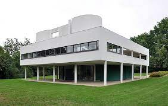

135. VIlla Savoye. Poissy-sur-Seine, France. Le Corbusier. 1929 CE Steel and reinforced concrete.
- Forn
- Box-like horizontal quality; an abstraction of a house
- The main part of the house is lifted off the ground by narrow pilotis–thin free standing posts
- The house appears to float on pilotis; allows air to circulate around the base of the house
- The turing circular carport on the bottom floor enables family members to enter the house directly from their car
- All space is utilized, including the roof, which act as a patio
- The roof terraces bring the outdoors into the house
- Subtle colors: white on exterior symbolizes modern cleanliness and healthful living
- Open interior is free of many walls
- Some furniture is built into the walls
- Ribbon windows wind around the second floor
- Streamlines look
- Living spaces that are surrounded by glass face an open courtyard-type setting on the second floor
- Function and Patronage
- A three-bedroom country house with servants’ quarters on the ground floor
- Built in suburban Paris as a retreat for the wealthy
- Patrons: Pierre and Emilie Savoye
- Context
- No historical ornamentation.